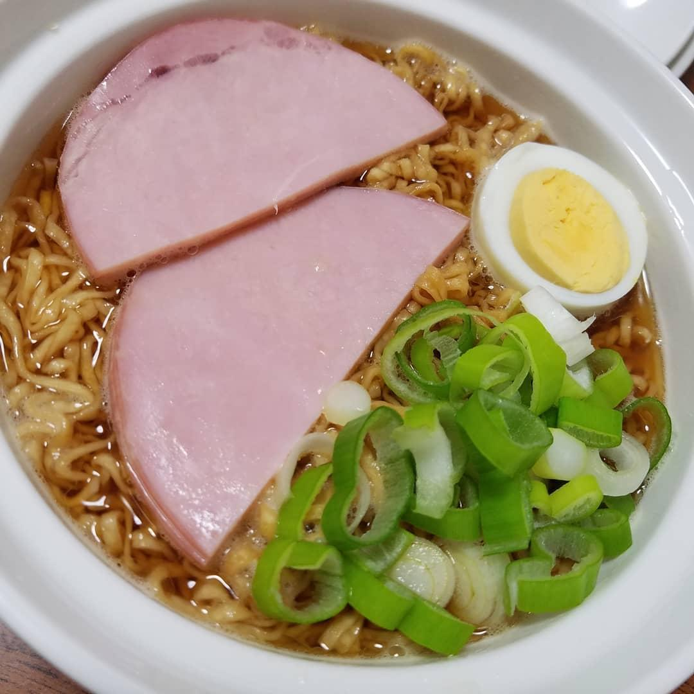

ハムラーメン (Ham Ramen) – Ponyo
A simple and comforting noodle soup, just like in the movie Ponyo!
My version:

Ingredients
- 1 packet of instant noodles
- Water
- 1 slice of cooked ham
- 1 egg
- Green onion (optional)
Steps
- Boil water and cook the instant noodles according to the package instructions.
- Pour the noodles and broth into a bowl.
- Top with a slice of ham, a boiled egg (halved), and green onion if you like.
- Enjoy your Ponyo-style ramen!
Home